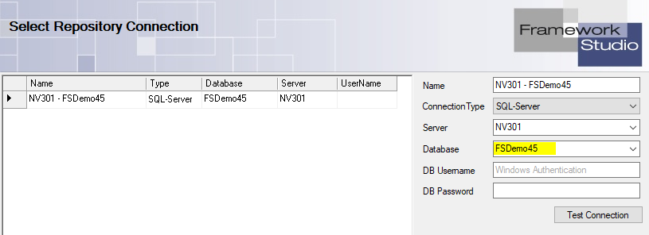

Frequently asked questions
In diesem Kapitel dreht sich alles um Fragen und Probleme, welche uns in regelmäßigen Abständen erreichen. Unteranderem werden wir hier auch bekannte Fehler-Stacktraces auflisten und deren Fehlerbehebung.
Anleitungen
Für eine Performance-Analyse und eine Stackoverflow Analyse gibt es unter Knowledge bereits eine Dokumentation.
FrameworkStudio Repository Backup bereitstellen
- Öffnen Sie Microsoft SQL Management Studio, um auf die FrameworkStudio Repository-Datenbanken zugreifen zu können.
- Wählen Sie die Datenbank aus, an welcher Sie sich auch im Framework Studio anmelden. 
- ContextMenü der Datenbank im SQL Management Studio öffnen - Tasks - Back up ...
Backup type: Fullauswählen!- Ggf. Speicherort auswählen und
OKdrücken - Die erstellte Backup-Datei auf dem FTP hochladen und uns benachrichten, dass das Backup hochgeladen wurde.
Java-Applikation Java-Exception: null
Beim Start der Java-Applikation wird folgender oder ähnlicher Fehler ausgegeben:
Java-Exception: null
at FrameworkSystems.FSJavaClient.DevControl.LayoutComponentDefault.<init>(LayoutComponentDefault.java:54)
at FrameworkSystems.FSJavaClient.DevControl.LayoutComponentDefault.<init>(LayoutComponentDefault.java:43)
at FrameworkSystems.FSJavaClient.DevControl.LayoutComponentDefault.<init>(LayoutComponentDefault.java:39)
at FrameworkSystems.FSJavaClient.UIWrapper.UIItem.createLayoutComponent(UIItem.java:449)
at FrameworkSystems.FSJavaClient.UIWrapper.UIItem.getLayoutComponent(UIItem.java:443)
at FrameworkSystems.FSJavaClient.UIWrapper.support.UIContainerSupport.setChildrenAtDevControl(UIContainerSupport.java:30)
at FrameworkSystems.FSJavaClient.UIWrapper.UIDockPanel.resumeVch(UIDockPanel.java:57)
at FrameworkSystems.FSJavaClient.UIWrapper.visualControlHierarchy.VchSuspendManager.resume(VchSuspendManager.java:67)
at FrameworkSystems.FSJavaClient.DevForm.<init>(DevForm.java:407)
at FrameworkSystems.FSJavaClient.DevRequest.Response(DevRequest.java:1065)
at FrameworkSystems.FSJavaClient.DevRequest.Start(DevRequest.java:603)
at FrameworkSystems.FSJavaClient.FSViewer.init(FSViewer.java:267)
at FrameworkSystems.FSJavaClient.FSViewerSession.run(FSViewerSession.java:87)
at java.awt.event.InvocationEvent.dispatch(InvocationEvent.java:301)
at java.awt.EventQueue.dispatchEventImpl(EventQueue.java:758)
at java.awt.EventQueue.access$500(EventQueue.java:97)
at java.awt.EventQueue$3.run(EventQueue.java:709)
at java.awt.EventQueue$3.run(EventQueue.java:703)
at java.security.AccessController.doPrivileged(Native Method)
at java.security.ProtectionDomain$JavaSecurityAccessImpl.doIntersectionPrivilege(ProtectionDomain.java:74)
at java.awt.EventQueue.dispatchEvent(EventQueue.java:728)
at java.awt.EventDispatchThread.pumpOneEventForFilters(EventDispatchThread.java:205)
at java.awt.EventDispatchThread.pumpEventsForFilter(EventDispatchThread.java:116)
at java.awt.EventDispatchThread.pumpEventsForHierarchy(EventDispatchThread.java:105)
at java.awt.EventDispatchThread.pumpEvents(EventDispatchThread.java:101)
at java.awt.EventDispatchThread.pumpEvents(EventDispatchThread.java:93)
at java.awt.EventDispatchThread.run(EventDispatchThread.java:82)
Ursache Systemvoraussetzung
Seit Version FS 4.5 verwendet FrameworkStudio den JxBrowser. Hierzu gibt es folgenden Hinweis in unserer Neuheiten-Dokumentation: https://frameworksystemsgmbh.github.io/fsdocs/v4.5/articles/neuheiten-4-5.html#neues-browser-control---austausch-des-javafx-browsers
Deshalb haben wir die unterstützten Windows Versionen nach oben setzen müssen. Bitte sehen Sie sich hierfür unsere Systemvoraussetzungen. in der Dokumentation an.
Lösung: Systeme auf die Systemvoraussetzungen updaten.
Sollte ein Update kurzfristig nicht möglich sein, kann der jxBrowser mit folgendem Ausdruck im FS Client Launcher durch den alten Browser ersetzt werden.
-Dfs.browser.legacy=1
Caution
Langfristig müssen Sie jedoch Ihr System auf die entsprechenden Systemvoraussetzungen updaten, da der alte Browser in Zukunft deaktiviert wird. Der alte Browser deckt nicht alle Funktionen ab, welche eNVenta benötigt. Hier ist deshalb mit Einschränkungen zu rechnen.
Ursache Citrix Environment
Es gibt ein bekanntes Problem bei unserem neuen JxBrowser Control in Zusammenhang mit Citrix. Die Dokumentation, um dieses Problem lösen können, finden Sie hier oder hier bei Citrix direkt.
Es ist notwendig die Citrix API Hooks auszuschalten.
Crystal Report Exception Fehler beim Laden der Datenbankinformation
Beim Druck von Crystal Reports kommt es zu folgender Exception:
Fehler in der Datei XYZ123.rpt:
Fehler beim Laden der Datenbankinformationen
CrystalDecisions.CrystalReports.Engine.DataSourceException: Fehler in der Datei XYZ123.rpt:
Fehler beim Laden der Datenbankinformationen
--> System.Runtime.InteropServices.COMException: Fehler in der Datei XYZ123.rpt:
Fehler beim Laden der Datenbankinformationen
bei CrystalDecisions.ReportAppServer.Controllers.DatabaseControllerClass.ReplaceConnection(Object oldConnection, Object newConnection, Object parameterFields, Object crDBOptionUseDefault)
bei CrystalDecisions.CrystalReports.Engine.Table.SetDataSource(Object val, Type type)
bei CrystalDecisions.CrystalReports.Engine.ReportDocument.SetDataSourceInternal(Object val, Type type) --------------------
bei CrystalDecisions.ReportAppServer.ConvertDotNetToErom.ThrowDotNetException(Exception e)
bei CrystalDecisions.CrystalReports.Engine.ReportDocument.SetDataSourceInternal(Object val, Type type)
bei CrystalDecisions.CrystalReports.Engine.ReportDocument.SetDataSource(DataSet dataSet)
Lösung
Die genaue Ursache ist nicht bekannt, folgende Vorgehensweisen wurden uns aber als Lösung des Problems gemeldet:
- Deinstallation und Neuinstallation der CR Engine und evtl. Neustart des Servers.
- ggf. nochmal auf die CR Version 13.0.18.2192 zurückspringen
Uns sind auch Probleme bei Updates auf eine Runtime 13.0.26 oder höher bekannt. Eine Anleitung wie Sie hier vorgehen müssen, finden Sie hier.
DevExpress Exception ScriptItemizeOpenType in Usp10.dll nicht gefunden
Beim Druck eines DevExpress Reports kommt es zu folgender Exception:
Der Einstiegspunkt "ScriptItemizeOpenType" wurde nicht in der DLL "Usp10.dll" gefunden.
System.EntryPointNotFoundException: Der Einstiegspunkt "ScriptItemizeOpenType" wurde nicht in der DLL "Usp10.dll" gefunden.
bei DevExpress.Pdf.ContentGeneration.Interop.UniscribeInterop.ScriptItemizeOpenType(String pwcInChars, Int32 cInChars, Int32 cMaxItems, SCRIPT_CONTROL& psControl, SCRIPT_STATE& psState, SCRIPT_ITEM[] pItems, OPENTYPE_TAG[] pScriptTags, Int32& pcItems)
bei DevExpress.Pdf.ContentGeneration.Interop.UniscribeInterop.ScriptItemize(String text, SCRIPT_CONTROL& psControl, SCRIPT_STATE& psState, OPENTYPE_TAG[]& scriptTags)
bei DevExpress.Pdf.ContentGeneration.UniscribeShaper.CreateRuns(String text, Boolean directionRightToLeft)
bei DevExpress.Pdf.ContentGeneration.UniscribeShaper.CreateTextAnalysisRuns(String text, Boolean directionRightToLeft)
bei DevExpress.Drawing.Internal.Fonts.DXShaper`1.ShapeText(String text, Boolean directionRightToLeft, Single fontSizeInPoints, Boolean useKerning)
bei DevExpress.Pdf.ContentGeneration.PdfExportFullTrustFont.FullTrustFontShaper.ShapeText(String text, Boolean directionRightToLeft, Single fontSizeInPoints, Boolean useKerning)
bei DevExpress.Pdf.Native.PdfTabbedStringFormatter.FormatString(String line)
bei DevExpress.Pdf.ContentGeneration.PdfGraphicsCommandConstructor.FormatMultilineText(String[] lines, PdfExportFontInfo fontInfo, Single tabStopInterval, Boolean isRtl)
bei DevExpress.Pdf.ContentGeneration.PdfGraphicsCommandConstructor.DrawFormattedLines(String[] lines, PdfExportFontInfo fontInfo, RectangleF layout, DXStringFormat format, Nullable`1 clipRectangle)
bei DevExpress.Printing.Core.NativePdfExport.PdfPrintingGraphicsImplementation.<>c__DisplayClass12_0.<DrawFormattedStringLines>b__0()
bei DevExpress.Printing.Core.NativePdfExport.PdfGraphicsImplementation.PerformIsolatedAction(Action action)
bei DevExpress.Printing.Core.NativePdfExport.PdfPrintingGraphicsImplementation.DrawFormattedStringLines(String[] lines, DXSolidBrush solidBrush, RectangleF bounds, DXStringFormat validFormat, PdfExportFontInfo fontInfo)
bei DevExpress.Printing.Core.NativePdfExport.PdfPrintingGraphicsImplementation.<>c__DisplayClass9_0.<DrawString>b__0(DXStringFormat validFormat)
bei DevExpress.XtraPrinting.Native.GraphicsBase.EnsureDXStringFormat(DXFont font, RectangleF bounds, DXGraphicsUnit unit, DXStringFormat dxFormat, IMeasurer measurer, Action`1 action)
bei DevExpress.Printing.Core.NativePdfExport.PdfPrintingGraphicsImplementation.DrawString(String s, DXFont font, DXBrush dxBrush, RectangleF bounds, DXStringFormat format, IMeasurer measurer, Boolean justifyText)
bei DevExpress.Printing.Core.NativePdfExport.PdfGraphics.DrawString(String s, DXFont font, DXBrush dxBrush, RectangleF bounds, DXStringFormat dxFormat)
bei DevExpress.XtraPrinting.BrickExporters.TextBrickExporter.DrawCore(IGraphics gr, RectangleF clientRectangle, DXStringFormat sf, DXBrush brush)
bei DevExpress.XtraPrinting.BrickExporters.TextBrickExporter.DrawText(IGraphics gr, RectangleF clientRectangle, DXStringFormat sf, DXBrush brush)
bei DevExpress.XtraPrinting.BrickExporters.LabelBrickExporter.DrawCore(IGraphics gr, RectangleF clientRectangle, DXStringFormat sf, DXBrush brush)
bei DevExpress.XtraPrinting.BrickExporters.LabelBrickExporter.DrawPdfCore(IPdfGraphics gr, RectangleF clientRectangle, DXStringFormat sf, DXBrush brush)
bei DevExpress.XtraPrinting.BrickExporters.LabelBrickExporter.DrawText(IGraphics gr, RectangleF clientRectangle, DXStringFormat sf, DXBrush brush)
bei DevExpress.XtraPrinting.BrickExporters.TextBrickExporter.DrawClientContent(IGraphics gr, RectangleF clientRect)
bei DevExpress.XtraPrinting.BrickExporters.VisualBrickExporter.DrawObjectCore(IGraphics gr, RectangleF rect)
bei DevExpress.XtraPrinting.BrickExporters.VisualBrickExporter.<>c__DisplayClass17_0.<DrawObjectCoreWithClipping>b__0()
bei DevExpress.XtraPrinting.Native.IGraphicsExtensions.ExecUsingClipBounds(IGraphics gr, Action action, RectangleF clipBounds, Boolean snapToDpi)
bei DevExpress.XtraPrinting.BrickExporters.VisualBrickExporter.DrawObjectCoreWithClipping(IGraphics gr, RectangleF rect)
bei DevExpress.XtraPrinting.BrickExporters.VisualBrickExporter.DrawObject(IGraphics gr, RectangleF rect)
bei DevExpress.XtraPrinting.BrickExporters.VisualBrickExporter.<>c__DisplayClass15_0.<Draw>b__0()
bei DevExpress.XtraPrinting.Native.BrickPaintBase.ExecUsingStyle(Action action, BrickStyle style)
bei DevExpress.XtraPrinting.BrickExporters.VisualBrickExporter.Draw(IGraphics gr, RectangleF rect)
bei DevExpress.XtraPrinting.BrickExporters.CompositeBrickExporterHelper.DrawInnerBricks(IGraphics gr, BrickIterator bricks)
bei DevExpress.XtraPrinting.Native.IGraphicsExtensions.ExecUsingClipBounds(IGraphics gr, Action action, RectangleF clipBounds, Boolean snapToDpi)
bei DevExpress.XtraPrinting.BrickExporters.CompositeBrickExporterHelper.Draw(IGraphics gr, RectangleF rect, BrickBase brickBase)
bei DevExpress.XtraPrinting.BrickExporters.CompositeBrickExporter.Draw(IGraphics gr, RectangleF rect)
bei DevExpress.XtraPrinting.BrickExporters.CompositeBrickExporterHelper.DrawInnerBricks(IGraphics gr, BrickIterator bricks)
bei DevExpress.XtraPrinting.Native.IGraphicsExtensions.ExecUsingClipBounds(IGraphics gr, Action action, RectangleF clipBounds, Boolean snapToDpi)
bei DevExpress.XtraPrinting.BrickExporters.CompositeBrickExporterHelper.Draw(IGraphics gr, RectangleF rect, BrickBase brickBase)
bei DevExpress.XtraPrinting.BrickExporters.PageExporter.DrawContent(IGraphics gr, RectangleF rect)
bei DevExpress.XtraPrinting.BrickExporters.PageExporter.Draw(IGraphics gr, RectangleF rect)
bei DevExpress.XtraPrinting.BrickExporters.PageExporter.DrawPage(IGraphics gr, PointF location)
bei DevExpress.XtraPrinting.Export.Pdf.PdfDocumentBuilder.ExportPage(PrintingSystemBase ps, IPdfGraphics gr, Page page, Int32 pageIndex)
bei DevExpress.XtraPrinting.Export.Pdf.PdfDocumentBuilder.<>c__DisplayClass5_2.<CreateDocument>b__4()
bei DevExpress.XtraPrinting.Export.Pdf.PdfDocumentBuilder.CreateDocument(Stream stream, Document document, PdfExportOptions pdfOptions, Boolean flushPageContent)
bei DevExpress.XtraPrinting.PrintingSystemBase.ExportToPdf(Stream stream, PdfExportOptions options)
bei FrameworkSystems.FrameworkBase.Reporting.DevExpressReport.ExportToStream(ExportFormat format, Stream stream)
bei FrameworkSystems.FrameworkBase.Reporting.DevExpressReport.ExportToBytes(ExportFormat format)
bei FrameworkSystems.FrameworkBase.Reporting.ReportDocument.ExportReportDevExpress(ReportEnum reportEnum, ExportFormat format, guid printJobID)
bei FrameworkSystems.FrameworkBase.Reporting.ReportDocument.ExportReport(ExportFormat format, guid printJobID, ReportingSoftware& software)
bei FrameworkSystems.FrameworkBase.Reporting.ReportDocument.WriteReportToRepository(ExportFormat export, guid reportPrintID)
bei FrameworkSystems.FrameworkBase.Reporting.ReportDocument.Print(ExportFormat export)
...
Lösung
Das Problem tritt bisher ausschließlich bei einem Parallelbetrieb von Crystal Reports und DevExpress auf. Der Fehler entsteht, wenn zuerst ein Crystal Report und anschließend ein DevExpress mit Unicode Zeichen gedruckt wird.
Crystal Report lädt beim ersten Druck eine ältere Version der usp10.dll, diese wird im IIS registriert. Sobald nun ein DevExpress gedruckt wird, wird hier ebenfalls auf die usp10.dll zugegriffen. DevExpress erwartet jedoch eine neuere Version der DLL, als die DLL die von Crystal im IIS geladen wurde.
Derzeit ist der Fehler nur mit einer Crystal Runtime 13.0.18 reproduzierbar. Aus diesem Grund raten wir zu einem Update auf die Crystal Report Runtime 13.0.29.
Gegebenenfalls kann es nach einem Update der Crystal Report Runtime zu folgendem Fehler kommen: Crystal Report Exception Fehler beim Laden der Datenbankinformation. Bitte beachten Sie deshalb die folgende Vorgehensweise!
Betriebssystem MacOS Applikation Unterstützung
MacOS unterstützen wir seit einiger Zeit nicht mehr. Wir gewährleisten auch keinen Support hierfür . Auf eigenes Risiko kann natürlich mit Java 8 ein Betrieb von eNVenta ERP versucht werden.
Änderungen sind hier in der Zukunft nicht geplant.
Java-Client friert bei Nutzung von ARM-Prozessoren ein
Wenn der Java-Client ohne ersichtlichen Grund immer wieder einfriert, sollte geprüft werden, ob der genutzte Prozessor auf der ARM-Architektur basiert. Diese wird von unserer bereitgestellten Azul JavaRuntime nicht unterstützt.
Exception Code Analysis has been disabled in this code editor because generating code took too long (17,1 s)
Code Analysis has been disabled in this code editor because generating code took too long (17,5s)!
Exception in diagnostics task:
System.Exception: Error creating code for NV.ERP.MM.Sales.cfrmSalesOrder
Bei dieser Meldung im Output-Fenster handelt es sich um einen Schutz-Mechanismus und nicht um einen "Fehler".
Der Code-Editor führt recht aufwändige Analysen durch, damit die (potentiellen) Compile-Error unmittelbar beim Bearbeiten im Code kenntlich gemacht werden. Dauert diese Analyse zu lange kann das dazu führen, dass Framework Studio praktisch lahmgelegt wird, sobald im Code-Editor getippt wird. Arbeiten ist dann nicht mehr möglich. Um genau diese Blockade zu verhindern, schalten wir diese Analyse ab, wenn die Ermittlung beim ersten Aufruf länger als 10 Sekunden oder bei einem erneuten Aufruf länger als 5 Sekunden dauert.
Im genannten Beispiel waren es 17,1 Sekunden.
Drucker wird im Namen mit ## ERR ## angezeigt
Der Print-Service prüft beim Hochfahren alle konfigurierten Drucker. Wenn dabei ein Fehler auftritt (z.B. weil der Drucker nicht mehr existiert), wird der Name des betroffenen Druckers mit der Kennung ## ERR ## versehen. Um sicher zu gehen, können Sie auch die Log-Datei des Print-Service prüfen.
Mit der PrintServiceConfigEditor.exe können Sie diese Drucker aus der Konfiguration entfernen. Nach einem Neustart des Print-Service werden die gelöschten / nicht mehr existenten Drucker im Runtime-Repository auf gelöscht gesetzt. Anschließend sollten Sie auch in eNVenta nicht mehr angeboten werden.